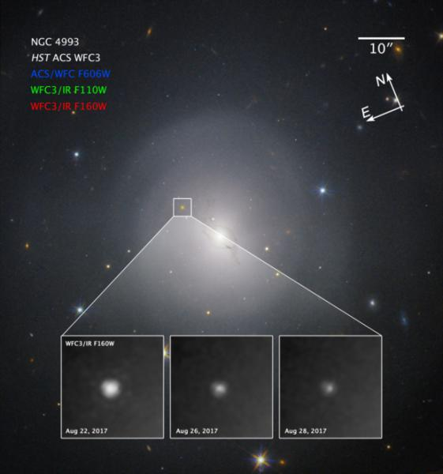
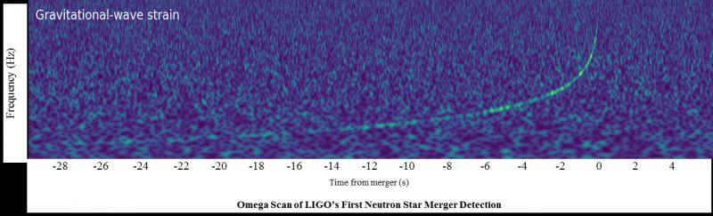
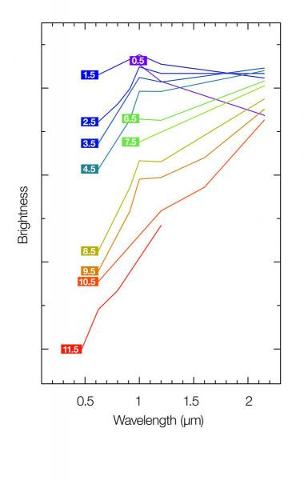
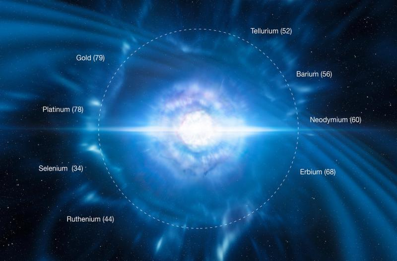
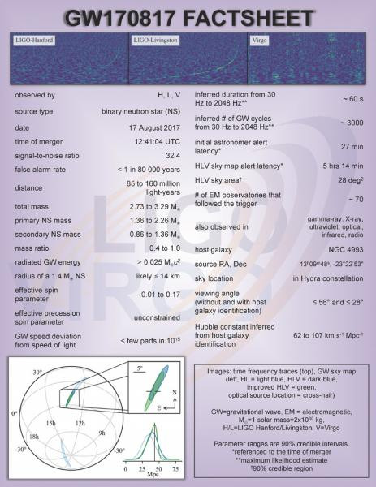

2017.10.16：美国宇航局（NASA）和欧洲空间局（ESA）合作的哈勃太空望远镜，首次观测了一个引力波事件的天体源。该事件由两颗中子星合并造成，产生了一颗巨新星——几十年前理论预言的产物——并向太空抛出大量的金、铂等极重金属。该事件还提供了短γ暴起因于中子星合并的迄今最强证据。本次发现还是多信使天文学的首次实践，第一次把引力波与电磁波观测结合在一起。
>
本图由哈勃高级巡天相机（ACS）和第三代广域相机（WFC3）拍摄，图像分别摄于2017.8.22、8.26、8.28。视场：1.60×1.60角分。伪彩配色如下：ACS/WFC3，606nm（纳米）的红光，配色蓝； WFC3，1.10微米的近红外光，绿；1.6微米的近红外光，红。图像中心坐标：赤经13时09分48.08秒，赤纬-23°22′53.20″。图中的三个小图分别显示3天中巨新星的光度变化。 美国东部时间2017.8.17 8:41:04，位于美国的激光干涉引力波天文台（LIGO）和位于欧洲的室女座干涉仪（Virgo Interferometer）都探测到一起引力波事件，编号GW170817（注1）。仅仅2秒钟不到，位于太空的NASA的费米γ射线望远镜（FGST）和ESA的国际γ射线天体物理实验室望远镜（INTEGRAL）在同一个天区方向，观测到一起短γ暴事件。
随着γ暴事件的信息发布，一系列望远镜开始在夜空中搜寻对应事件的天体源。天文学家很快发现，源在长蛇座的透镜星系NGC 4993中，离我们约1.3亿光年。在星系核心的左上方，原先并无恒星的所在有一个明显的亮点。这引发了全球最强大的望远镜竞相观测——其中就包括哈勃望远镜（注2）。 多个科学团队，在两周的时间内，持续使用哈勃等望远镜，跟踪NGC 4993中的引力波事件。根据哈勃的高分辨率图像，他们首先确认，这是一颗巨新星（kilonova，直译千倍新星，又名为macronova，故名，译注），是两颗极端致密天体——最可能是两颗中子星合并的光学对应天（注3）。这类合并30年前就提出了假说，但今天才首次真正观测到该事件（注4）。1.3亿光年的距离，使得它件同时成为迄今观测到的最近的引力波事件和最近的γ暴事件（极高强度的超高能量电磁波——γ射线爆发事件，短γ暴持续＜2秒钟，译注）。

首个哈勃观测团队领队、英国华城大学（Warwick）的爱德华·莱文（Andrew Levan）回忆道：“当我看到LIGO和室女座指出的引力波目标也是同时发生的γ暴的目标时，简直要飞起来！当我初步确定是中子星合并事件时，激动得快昏啦……我们期待这个时机实在太久太久了！” 哈勃拍摄的NGC 4993光学和红外图像显示，星系核心的左上方出现一个明亮的天体，它比新星亮，但比超新星暗（通常新星增亮约千倍，而超新星超过亿倍，kilonova意味着新星亮度的千倍左右，译注）。哈勃图像显示，6天内该天体就明显变暗（超新星此时将处于最亮，并持续多日）。团队对哈勃获得的光谱分析还发现，巨新星抛出物质的速度达到了光速的1/5（超新星通常＜1%）！
另一个哈勃团队的领队、英国莱斯特大学的尼尔·坦维尔（Nial Tanvir）教授接着解说：“巨新星的行为特征与理论预言的非常接近，真令人惊叹。它与已知的超新星行为迥异，因此可以极有信心的说，就是这个了！” 把巨新星、短γ暴和中子星合并事件联系起来真的好难，但大量的后续观测细节最终证实，GW170817引力波事件与此完全有关。

莱文继续：“巨新星的光谱与理论物理预言的两颗中子星合并时喷出物的光谱特征极为吻合，它把该天体与引力波源自然地联系在一起，所有的合理怀疑都能排除。” 哈勃的红外光谱中也发现了多条宽阔的吸收线，对应的正是自然界中最重的那些元素。本观测还将有助于解决天文学的一个长期难题：金铂等极重元素的起源（注5）。中子星合并的场景，恰好符合它们的产生条件。
这些观测的影响是巨大的，坦维尔进一步阐述：“本发现开启了天文学研究的新时代，我们现在能把电磁波与引力波的信息结合在一起研究——我们称其为多信使（multi-messenger）天文学，在此之前这还是梦想！” 莱文总结道：“从此以后，天文学家将不再局限于几百年不变的观测天体的光线。我们不但要看，还要听——对那些用电磁波很难研究的目标，引力波为我们提供了了完整的信息。把引力波与电磁波结合起来，将帮助天文学家理解宇宙中的那些极端现象。”

附注
1、引力波是时空的波动，产生于物质的运动。但是只有最致密、最大质量物体的极端运动产生的引力波，才足以被当前的引力波探测设备发现。当前发现的引力波现象，都来自黑洞的合并和中子星的合并。
2、除哈勃外，参与观测事件的空间望远镜还包括NASA的雨燕X线望远镜、钱德拉X线望远镜、斯皮策红外望远镜；地面望远镜则有：欧洲南方天文台（ESO）位于智利北部高山的甚大望远镜VLT、新技术望远镜NTT、VLT巡天望远镜（VST）、红外/光学巡天望远镜VISTA、ESO/MPG合作的2.2米光学望远镜、阿塔卡玛大型毫米/亚毫米射电阵列（ALMA）、增强型快眼（REM）望远镜；还有在智利同一区域的卡耐基天文台Swope望远镜、拉斯坎帕纳斯天文台（LCO）0.4米望远镜，以及位于夏威夷的美国暗能量相机阵列（DECam）和全景测量望远镜和快速反应系统（Pan-STAARS），它们从各个波段对事件本身和爆发余辉进行了跟踪观测。
3、中子星是超过8倍太阳质量的大质量恒星经超新星爆发后的残骸，核心坍缩后的引力强大到把电子都压入原子核形成中子，量子力学中的中子简并压力顶住了引力的继续肆虐（上一级的白矮星靠的是电子简并压力）。中子星是已知的最小最致密天体，然后就是黑洞了（我们现在还不知道有什么能对抗黑洞内部的引力）。
4、2013年，天文学家公布了一个短γ暴的研究结果，认为这是一颗巨新星（http://www.astron.ac.cn/bencandy-3-9459-1.htm，研究首席正是本文作者之一）。当时缺少决定性的观测证据，因此后续的争议不断，新发现未被广泛承认。
5、本观测确定了比铁重得多的超重元素起源问题。理论预言，在致密天体核心能够发生称为r过程的核聚变（吸收能量的快中子捕获过程），产生这些元素。
